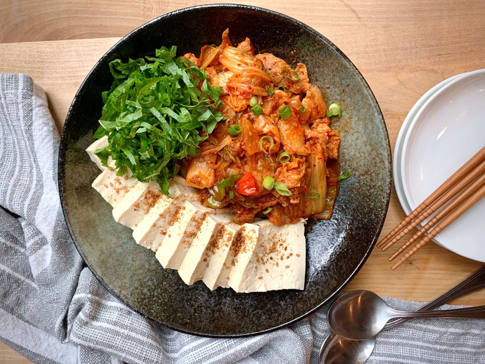

Dubu kimchi is a popular dish made with old kimchi. Stir-fry the kimchi and pork and serve with sliced tofu that has been boiled or pan-fried. Simply omit the pork to make it a meatless dish if you like.
You can serve this dubu kimchi as a side or a main dish with a bowl of rice. In Korea, dubu kimchi is a popular drinking snack (anju, 안주), especially with Korean alcohol beverage soju (소주) or makgeolli (막걸리).
Cut kimchi and pork into bite sizes. Thinly slice onion and scallions. In a large bowl, combine kimchi, pork, onion, scallions and the remaining ingredients and mix well. Let it stand for 15 minutes.
In a medium size pot, bring about 4 cups of water to a boil. Cut the tofu into two blocks. Reduce the heat to medium high, and add the tofu. Gently boil for 5 minutes. Carefully transfer the tofu to a colander to drain. Cut each block into about 1/2-inch thick slices.
Heat a large pan over medium high heat and add the kimchi and pork mix. Cook until the kimchi becomes soft, the pork is cooked through, and most of the liquid generated during the cooking process is evaporated, about 5 - 6 minutes.
Arrange the tofu slices and the stir-fried kimchi nicely on a plate and serve.
Total Time: 20 min
Servings: 2
Cut kimchi and pork into bite sizes. Thinly slice onion and scallions. In a large bowl, combine kimchi, pork, onion, scallions and the remaining ingredients and mix well. Let it stand for 15 minutes.
In a medium size pot, bring about 4 cups of water to a boil. Cut the tofu into two blocks. Reduce the heat to medium high, and add the tofu. Gently boil for 5 minutes. Carefully transfer the tofu to a colander to drain. Cut each block into about 1/2-inch thick slices.
Heat a large pan over medium high heat and add the kimchi and pork mix. Cook until the kimchi becomes soft, the pork is cooked through, and most of the liquid generated during the cooking process is evaporated, about 5 - 6 minutes.
Arrange the tofu slices and the stir-fried kimchi nicely on a plate and serve.